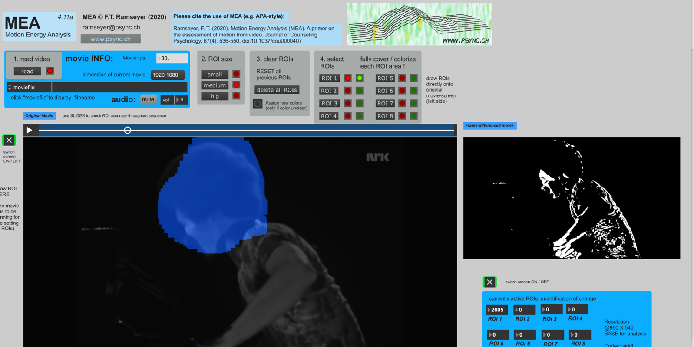

Section 2: Motion Energy Analysis
Contents
Section 2: Motion Energy Analysis¶
Download Motion Energy Analysis software and extract it to your system.¶
Open up this OneDrive folder linked here
Inside the folder, download either the MEA_WIN_4_11a.zip or the MEA_4_11a_MAC.zip, depending on whether you are using a Windows or Mac system and extract the files.
Note
The Windows version of MEA requires at least Windows 7. The Mac version requires OSX 10.13 or later.
Select ONE performance for further study, download both videos.¶
In the same OneDrive where you found the Motion Energy Analysis downloadable, you will find a folder called ‘Videos’. Inside this folder are a series of recordings of Jazz, Classical, Free Improvisation, Folk, and Indian Classical music.
Each performance has two files, one deemed to be of an especially intense moment in the music and the other of a moment of lower intensity. Choose one genre and download the two files.
Note
If you would prefer to select your own videos, you may – however, please ensure that it is comparable to the examples I’ve selected (approx. 1 minute in total length across the two videos, with a stationary camera that does not cut away and shows as much of the musician as possible).
Run MEA and load the low intensity video.¶
Load MEA by double clicking on the executable file (MEA_WIN_4_11a.exe for windows). Read the low intensity video file in by clicking the ‘read’ button in the top left of MEA and verify that it can play.
In the box labelled ‘2. ROI Size’, select medium. Next, choose ROI 1 in the ‘4. Select ROIs’ box. The red and green buttons next to this should light up. ROI refers to region of interest – this is the area of the video that motion will be tracked in.
Set head Region of Interest in MEA¶
With the video paused, proceed to draw over area in which the performer’s head and shoulders moves in. You may not be able to see exactly where you are drawing at first, but this should appear when you next play the video.
Play the video through and make sure that you are covering most of the area where the performer moves their head. If at any point you need to clear the ROI and start over, you can do this by pressing the ‘delete all ROIs’ button.
Note
You may also choose to define additional ROIs, perhaps for the hands or body, and include these in the analysis as well.
Expected result:

Run MEA on the video and generate a text file.¶
In MEA, scroll down so that you can see the boxes labelled 5 to 10. If you can’t scroll down, you may need to make sure that the MEA window is full screen – or you can try pressing the Window drop down menu and selecting ‘bring all to front’.
Scroll the video back to the very beginning. Then, in the box labelled ‘7. Start MEA’, click the red button underneath screens to turn the displays off, and click the button labelled ‘Start MEA’. Allow the video to run all the way through.
Once the video has finished running completely, press the ‘save TXT’ button to save the results of the analysis as a text file to your system. Verify this has worked successfully – it should look like a long list of numbers, most of which will be zero (these are the ROIs we did not use).
Note
When exporting, MEA may not automatically set the file extension for this text file to allow you to open it properly. If you cannot open the file, try renaming it to *.txt manually, where * is the filename you chose.
Expected result: a text file that looks something like this
0 0 0 0 0 0 0 0 0
59 0 0 0 0 0 0 0 0
75 0 0 0 0 0 0 0 0
59 0 0 0 0 0 0 0 0
120 0 0 0 0 0 0 0 0
105 0 0 0 0 0 0 0 0
0 0 0 0 0 0 0 0 0
132 0 0 0 0 0 0 0 0
95 0 0 0 0 0 0 0 0
Repeat MEA for the high intensity video to generate a second text file.¶
Now repeat these steps for the high intensity video. You may find that you need to increase the amount of space you cover in the head ROI if the performer is moving more compared to the low intensity video.
Note
If you have problems running MEA, first check the manual (included in the OneDrive). Some problems can be solved by installing MaxMSP from Cycling74. If you still cannot solve your problem, email me a description of it and I will be able to send you data that you can use to continue with the exercise.